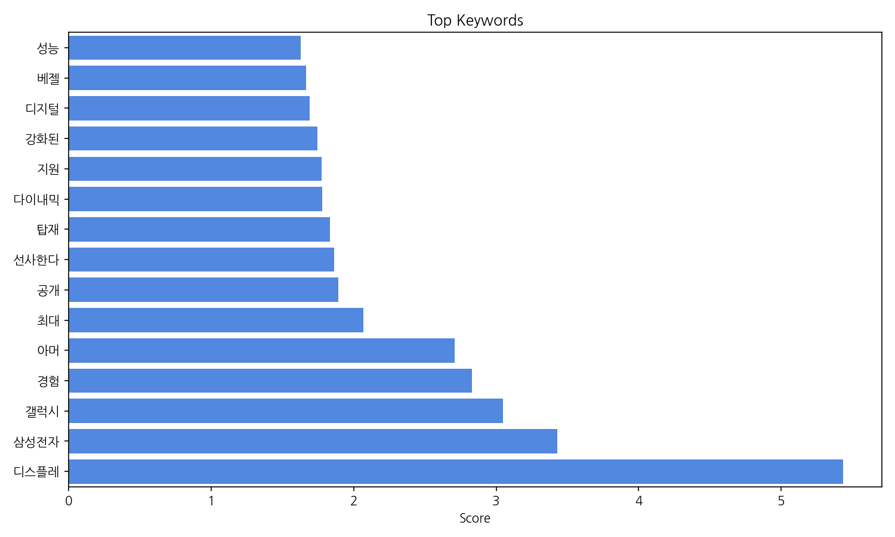
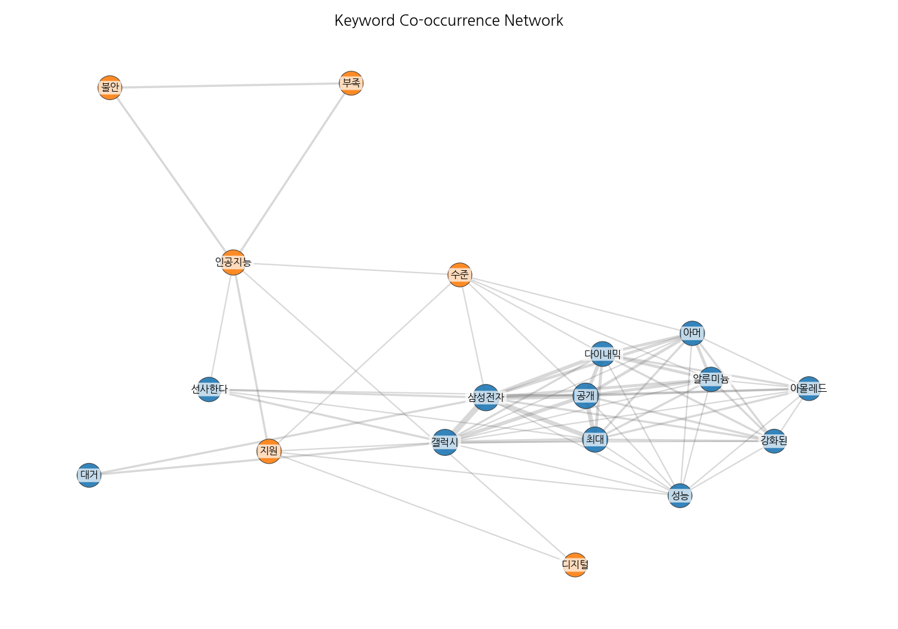
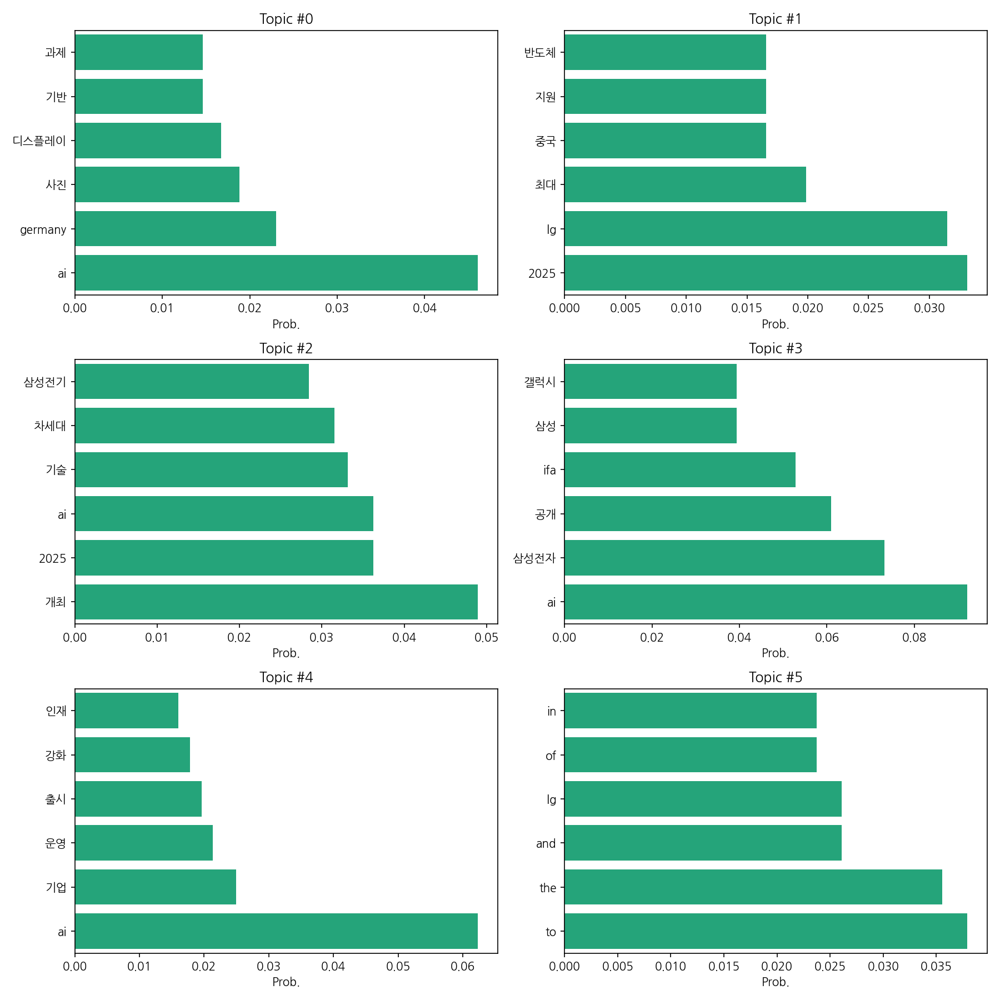

이번 기간 핵심 토픽과 키워드, 주요 시사점을 요약합니다.
핵심 맥락: 제공된 데이터는 2024년부터 2025년 9월 초까지 한국 뉴스에서 주요하게 다뤄진 세 가지 핵심 주제를 보여줍니다. 첫째, AI 기술과 관련된 다양한 산업 분야(디스플레이, 반도체, 기판 등)의 적용 및 개발 현황입니다. 둘째, 삼성전자와 LG를 비롯한 한국 주요 기업들의 2025년 사업 전략 및 글로벌 시장 경쟁 상황을 보여줍니다. 마지막으로, IFA와 같은 주요 전시회를 중심으로 한 신제품 공개 및 기술 트렌드를 반영하고 있습니다. 이러한 주제들은 한국 경제의 핵심 동력인 IT 산업의 현재와 미래를 반영하고 있습니다.
최근 변화/스파이크: 2025년 9월 초(9월 1일~4일)에 기사 수가 급증하는 현상이 나타났습니다. 이는 특정 시점의 주요 뉴스 이벤트, 예를 들어 IFA 2025 전시회 개최 또는 관련 대규모 발표와 밀접한 관련이 있을 것으로 추측됩니다. 이 기간 동안 AI 기술, 삼성전자, LG 등 주요 기업 관련 뉴스가 집중적으로 보도되었을 가능성이 높습니다.
실무 인사이트:
주요 전시회 및 발표 시점에 맞춘 홍보 전략 강화: IFA 2025와 같은 주요 전시회 및 기업 발표 시점을 정확히 파악하여 집중적인 홍보 전략을 수립하고, 미디어 대응 체계를 미리 구축해야 합니다. 관련 키워드를 활용한 뉴스 모니터링 시스템 구축도 중요합니다.
| Rank | Keyword | Score |
|---|---|---|
| 1 | 디스플레 | 5.433 |
| 2 | 삼성전자 | 3.431 |
| 3 | 갤럭시 | 3.05 |
| 4 | 경험 | 2.832 |
| 5 | 아머 | 2.708 |
| 6 | 최대 | 2.067 |
| 7 | 공개 | 1.893 |
| 8 | 선사한다 | 1.864 |
| 9 | 탑재 | 1.835 |
| 10 | 다이내믹 | 1.781 |
| 11 | 지원 | 1.776 |
| 12 | 강화된 | 1.747 |
| 13 | 디지털 | 1.692 |
| 14 | 베젤 | 1.664 |
| 15 | 성능 | 1.627 |



핵심 맥락: 제공된 데이터는 2024년부터 2025년 9월 초까지 한국 뉴스에서 주요하게 다뤄진 세 가지 핵심 주제를 보여줍니다. 첫째, AI 기술과 관련된 다양한 산업 분야(디스플레이, 반도체, 기판 등)의 적용 및 개발 현황입니다. 둘째, 삼성전자와 LG를 비롯한 한국 주요 기업들의 2025년 사업 전략 및 글로벌 시장 경쟁 상황을 보여줍니다. 마지막으로, IFA와 같은 주요 전시회를 중심으로 한 신제품 공개 및 기술 트렌드를 반영하고 있습니다. 이러한 주제들은 한국 경제의 핵심 동력인 IT 산업의 현재와 미래를 반영하고 있습니다.
최근 변화/스파이크: 2025년 9월 초(9월 1일~4일)에 기사 수가 급증하는 현상이 나타났습니다. 이는 특정 시점의 주요 뉴스 이벤트, 예를 들어 IFA 2025 전시회 개최 또는 관련 대규모 발표와 밀접한 관련이 있을 것으로 추측됩니다. 이 기간 동안 AI 기술, 삼성전자, LG 등 주요 기업 관련 뉴스가 집중적으로 보도되었을 가능성이 높습니다.
실무 인사이트:
주요 전시회 및 발표 시점에 맞춘 홍보 전략 강화: IFA 2025와 같은 주요 전시회 및 기업 발표 시점을 정확히 파악하여 집중적인 홍보 전략을 수립하고, 미디어 대응 체계를 미리 구축해야 합니다. 관련 키워드를 활용한 뉴스 모니터링 시스템 구축도 중요합니다.
| Idea | Target | Value Prop | Score |
|---|---|---|---|
| AI 기반 맞춤형 디스플레이 광고 플랫폼 | 대기업 및 중소기업 광고주, 디지털 마케팅 에이전시, 쇼핑몰 운영자 | AI 기반 실시간 데이터 분석을 통해 최적의 타겟 고객에게 최적의 광고를 제공하여 광고 효율을 극대화합니다. 개인 맞춤형 광고 경험을 제공하여 소비자 만족도를 높입니다. 다양한 디스플레이 환경(온라인, 오프라인)에 적용 가능합니다. | 4.0 |
| 투명 OLED 디스플레이 기반 스마트 윈도우 | 건설업체, 건물 관리 회사, 스마트 시티 구축 사업자 | 투명 OLED 디스플레이를 활용하여 건물 창문에 정보를 표시하고, 에너지 효율을 높입니다. 실시간 정보 제공, 광고 게재, 분위기 연출 등 다양한 기능을 제공합니다. 건물 디자인 및 미적 가치를 향상시킵니다. | 3.8 |
| 플렉서블 디스플레이 기반의 맞춤형 의류 | 패션 디자이너, 의류 제조업체, 개인 소비자 | 플렉서블 디스플레이를 활용하여 개인의 취향에 맞는 디자인과 기능을 구현합니다. 다양한 디자인과 색상을 제공하고, 소비자의 개성을 표현할 수 있도록 합니다. 웨어러블 기기와 연동하여 편리성을 높입니다. | 3.7 |
| 홀로그램 기술 기반의 차세대 디지털 사이니지 | 백화점, 쇼핑몰, 공항, 박물관 등 대형 공공시설 운영자 | 홀로그램 기술을 활용하여 현실감 넘치는 3차원 영상을 구현하여 소비자의 시선을 사로잡고, 정보 전달력을 높입니다. 상호작용 기능을 통해 소비자 참여를 유도하고, 매장 분위기 연출 및 브랜드 이미지 제고에 효과적입니다. | 3.5 |
| AR 글래스 연동형 모바일 디스플레이 | 게임 유저, AR 콘텐츠 개발자, 건설 현장 작업자 | AR 글래스와 연동하여 모바일 디스플레이의 화면을 확장하고, AR 경험을 향상시킵니다. 휴대성과 사용 편의성을 높이고, 다양한 환경에서 활용 가능합니다. 몰입감 높은 AR 콘텐츠를 제공합니다. | 3.2 |